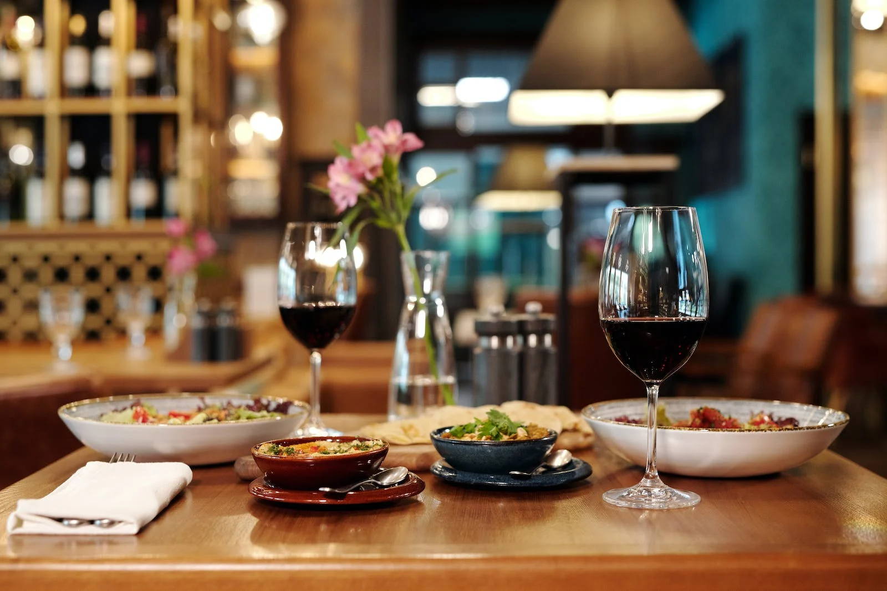
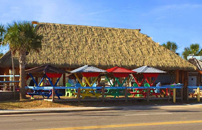
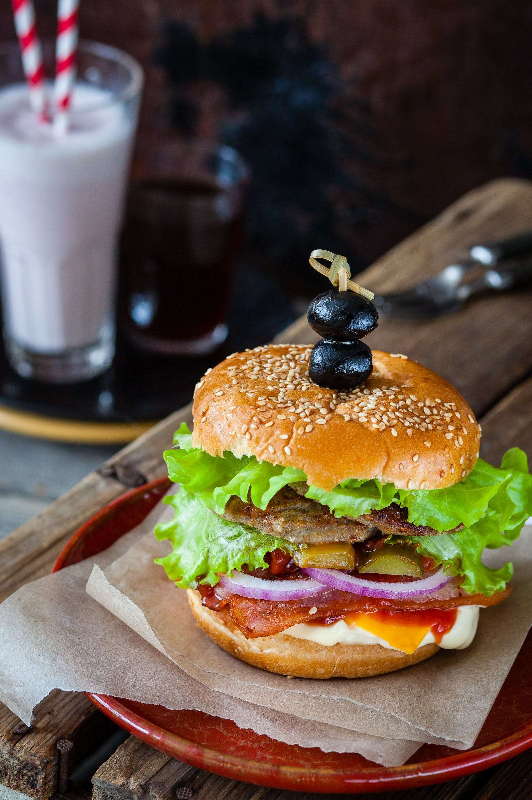

Havana's Restaurant
1 N Lake Park Blvd
Carolina Beach, NC 28428
(910) 458-2822
Member Since: 2009


Lazy Pirate Island Sports Grill
701 N Lake Park Blvd
Carolina Beach, NC 28428
336.338.1010
(910) 458-2822
Member Since: 2009
John Mackerel's Island Grill
PO Box 150
Kure Beach, NC 28449
Work Phone: (910) 458-7668(910) 458-7668
Member Since: 2009
